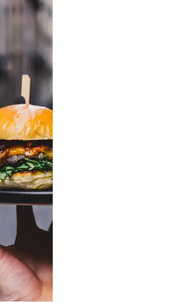

Menú
Hambugesas Don Julian
Hambugesas
Clasica
$100
Pan casero, medallon de carne vacuna, jamon cocido, queso, tomate y lechuga
Doble
$150
Pan casero, doble medallon de carne vacuna, doble cheddar, doble panceta
Vegetariana
$120
Pan casero, hambugesa de portobellos, zanahoria, morron y queso
Especial de la casa
$120
Pan casero, doble medallon de carne vacuna, queso azul, rucula y tomate
Bebidas
Te
$30
Soda
$40
@sitioincreible